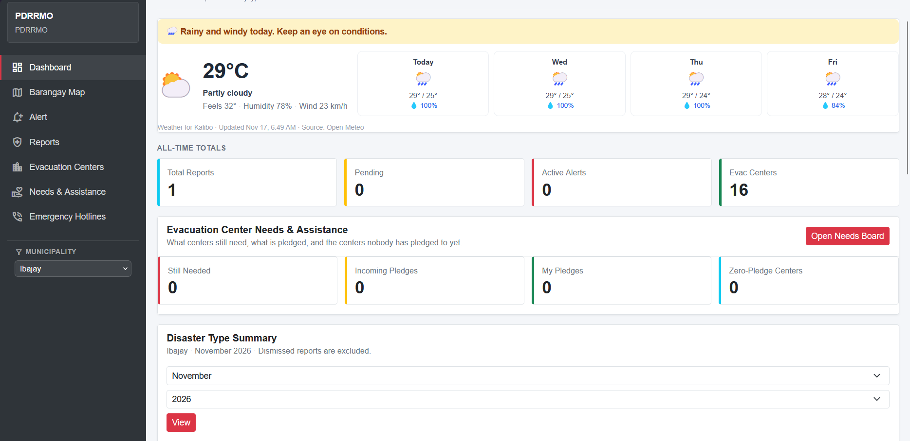
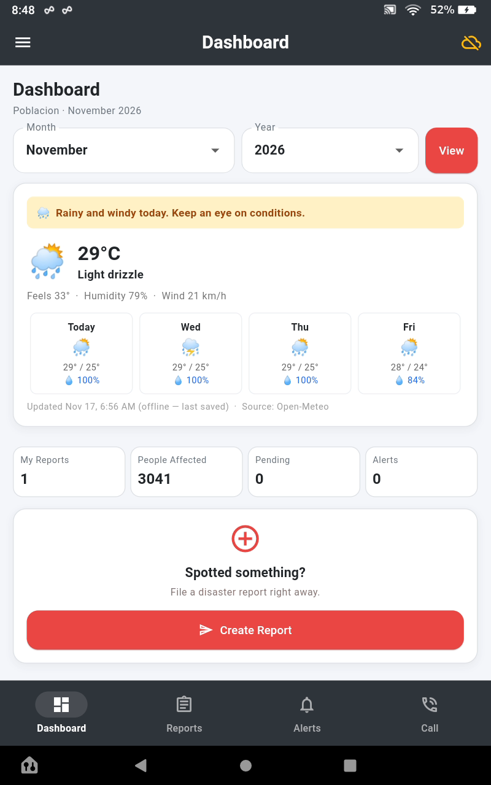
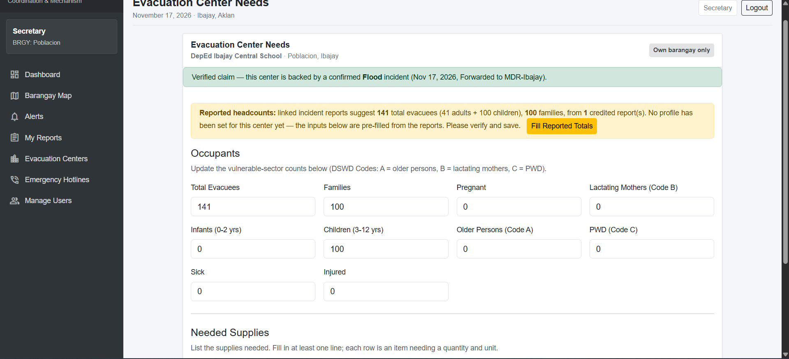

Tier 1 · Community Level
Barangay Tier
BHERT field reporting, Secretary center tracking, and Chairman review & forwarding.
Tier 2 · Municipal MDR
Municipal Tier
Incident verification, triage response, provincial referral, and Mayor read-only monitor.
Tier 3 · Provincial PDRRMO
Provincial Tier
Consolidated multi-municipality incidents, provincial review, and Governor overview map.
Field Mobile App
Mobile App
BHERT on-the-ground reporting with GPS location pinning, media evidence, and offline sync.
Resource Allocation
Needs & Assistance
Declared supply requirements, MDR/PDR pledge ledger, delivery logistics, and confirmation.